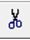

インバータ回路のシンボル作成
1. 回路図の準備
まず、実習1で作成したインバータ回路を利用します。「INV.asc」を開き、シンボル化の準備を行います。以下の手順に従って進めてください。
INV.asc を開く
実習1で保存した「INV.asc」を開きます。このインバータ回路を階層化して再利用するために、シンボルを作成します。
電源やグランドの消去
シンボル化する際には、回路に含まれる電源やグランドは削除する必要があります。具体的には、作成した回路から電源(VDD)やグランド(GND)のシンボルを消去します。 削除する理由は、上位の回路で電源やグランドを接続するため、シンボル内に電源やグランドを含めないようにするためです。
Delete キーもしくは  を押して、消したい電源や配線をクリックします。削除後、回路図は図のように電源と不要な配線が消去された状態になります。
入出力ピンの設定
ツールバーから PIN 配置ツール を選択
「I」「O」「VSS」「VDD」とそれぞれ記入します
- 「I」のときは「input」
- 「O」のときは「output」
- 「VSS」「VDD」の場合は「Bi-Direct」(bidirectional;双方向)
PIN の配置が終了すると、回路図は下図のような状態になります。
回路の保存
シンボル化する前に、作成した回路図を保存します。回路図は「INV_sch」という名前で保存してください。テキストには「INV_sch.asc」と書かれていますが、「asc」は入力する必要はありません。
ここで正しく保存しないと、この後のシンボルが中身のないものになってしまいます。毎年この部分で間違いが多いため、特に注意してください。保存時には、必ず設定内容や回路図の状態を確認し、正しく保存できているか確認しましょう。
2. シンボルの作成
シンボル作成の手順
メニューバーの Hierarchy > Open this sheet's symbol を選択します。
すると、次のメッセージが表示されます。
「Couldn't find this sheet's symbol. Shall I try to automatically generate one?」（このシートのシンボルが見つかりませんでした。自動的に作成しますか?）
このメッセージが表示されたら、「はい」を選択します。
PIN 配置の調整
シンボルが生成されたら、ツールバーの PIN 移動ツール を使用して、PIN を使いやすい位置に調整します。調整後、必ず「INV_sch」として保存します。ここでの保存が不十分だと、正しいシンボルが作成されないため注意してください。